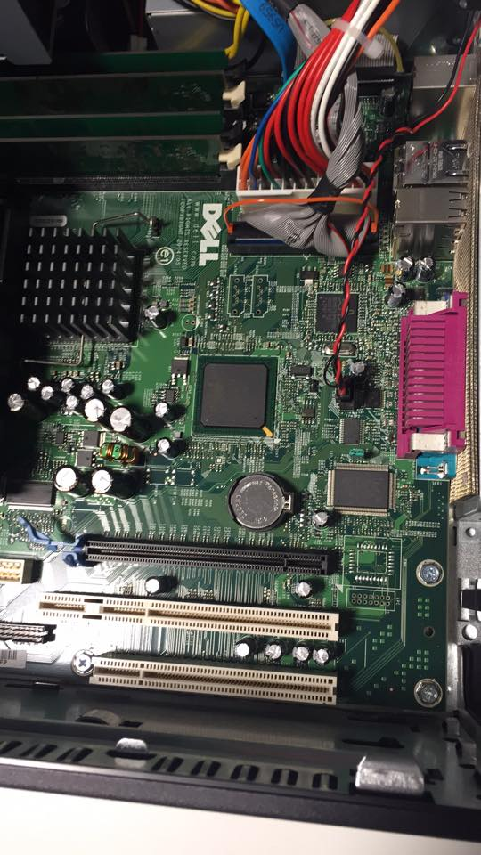
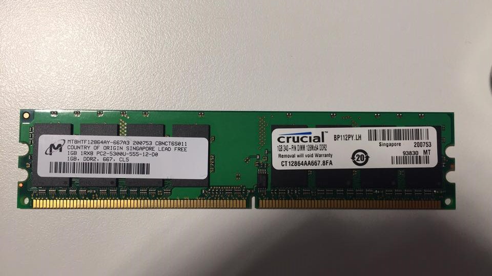

GRIT labbopgave
1. CPU
- prosessor type = intel pentium 4 cpu 2.88GHz
- clock speed = 2.88GHz
- bus speed = 880MHz
- L2 cache = 1 MB
- prosessor ID = 0F41
- hyperthreading = yes
- 64-bit tech = yes (intel EM64T)
2. memory
- installed memory = 2.5GB
- memory speed = 533MHz
- memory channel mode = dual interleaved
- Memory tech = DDR2 SDRAM
3. cache
- den har 1MB cache
- cache sin oppgave er å lagre den enste instruksen prosessoren skal utføre, dette gjør at den arbeider raskere da den ikke måhente fra det treigere internminnet som ram eller hardisken.
4. BIOS
- BIOS version A11 (30/11/2006)
- jeg fant ikke noen nyere version av bios, men bare samme fra 2006
- BIOS skal forberede datamaskinens maskinvare på å starte opp og bli tatt over av software som operativsystemet. biosen sjekker alt som er kobla til
-
ulike enheter
- hovedkort:

- prosessoren
- RAM

- strømforsyningen
- Disk
-
utvidelsesbusser
- 1 PCI-E er en raskere versjon av pci. antageligivis 1 eller 2. brukes til utvidelseskort.
- 1 PCI med en eksra del(ikke funnet noe navn på den)er en vanlgi pci men ser ut og ha en ekstra del ved siden.
- en vanlig PCI sender data til EIDE kanelerne, og som utvidelsesbuss for utvidelseskort med pci konnektor
- usb er en seriebuss som kan koble mange enheter sammen i serie. usb typen på denne tatamaskinen er usb2 type a, som har en maks hastighet på 480Mbps(60MBps)
-
minne
- pcn har en sata hardisk, den er mekanisk og e rpå 40GB. den er laga av seagate.
- det ser ut til at den kan ha 2 disker.
- den har 2 par med dimmer, 2 på 1GB og 2 på 256MB. begge to er DDR2
- flash minne er ikke volatile minne, som da betyr at det virker uavsett om det ikke er strøm altså den lagrer dataen. men vanlgi ram er sånn at det holder abre data så elnge den har strøm, hvis det blir strømbrudd så er det ikke noe mer data i rammen.
- datamaskinen har sammenlagt 2048+512=2560 MByte RAM
- et chipset kontrolerer datastrømmen mellom cpu, minne og enheter koblet til pcn.